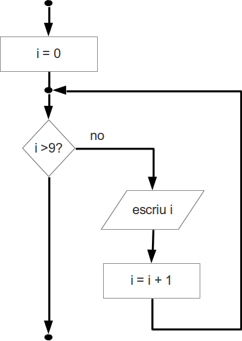

Recorreguts en pseudocodi¶
Per a realitzar un recorregut en pseudocodi, farem servir la paraula clau per.
Considera el següent fragment de programa:
** Primers deu nombres decimals
var i és enter
Per i de 0 a 9 fer
escriu i
Fper
Això escriuria els valors enters en el rang del 0 al 9: 0 1 2 3 4 5 6 7 8
9
En diagrama de flux de programa es pot representar amb:
L’increment per defecte és +1. És a dir, que pasem del valor 0 al valor 1 (sumem 1) i d’aquest al 2…
Es pot especificar un increment diferent de 1. Ex.
** Primers cinc nombres parells
var i és enter
Per i de 0 a 8 inc 2 fer
escriu i
Fper
Atenció: també podria ser Per i de 0 a 9 fer donat que la i
valdrà 10 després del 8.
També es pot especificar un decrement. Ex.
** Primers cinc nombres parells en ordre decreixen
var i és enter
Per i de 8 a 0 dec 2 fer
escriu i
Fper
o bé
** Primers cinc nombres parells en ordre decreixen
var i és enter
Per i de 8 a 0 inc –2 fer ** fixa't en el signe
escriu i
Fper
Juguem una mica¶
Fem una petita pràctica en pseudocodi i flux de programa per a veure si ho hem entés
Pràctica 1. Primers cent naturals amb poques línies de codi¶
Desenvolupa un programa que escrigui els primers 100 nombres naturals en ordre decreixent (un número per línia) en pseudocodi.
Nota: En pseudocodi podem explicitar el salt de línia per exemple amb la instrucció
escriu nova línia
o simplement
escriu NL
Pràctica 2. Entre dos nombres¶
Desenvolupa un programa que demani dos números a l’usuari i escrigui tots els números entre el primer i el segon, començant pel primer i acabant pel segon! Tingues en comptes el casos que el primer nombre sigui més gran, més petit o igual que el segon.
Fes la versió en pseudocodi i també en flux de programa.
Ref. IP11.1.1